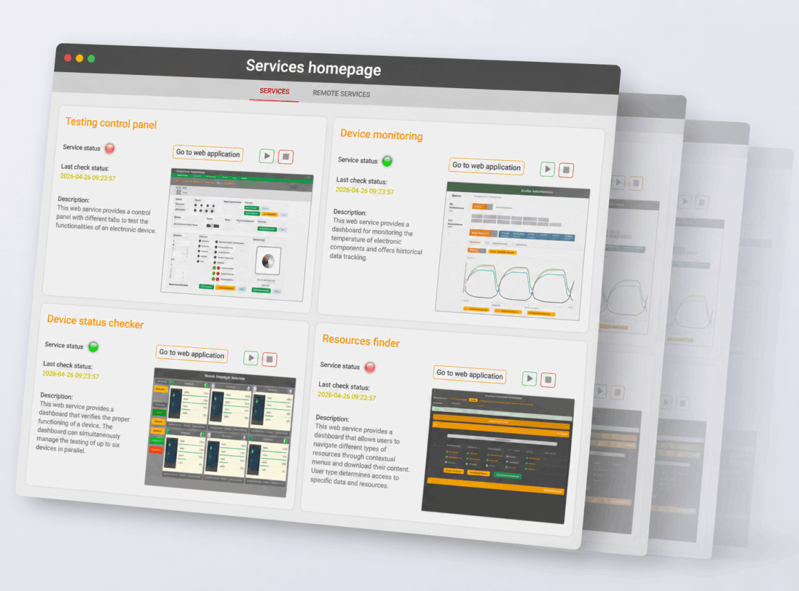
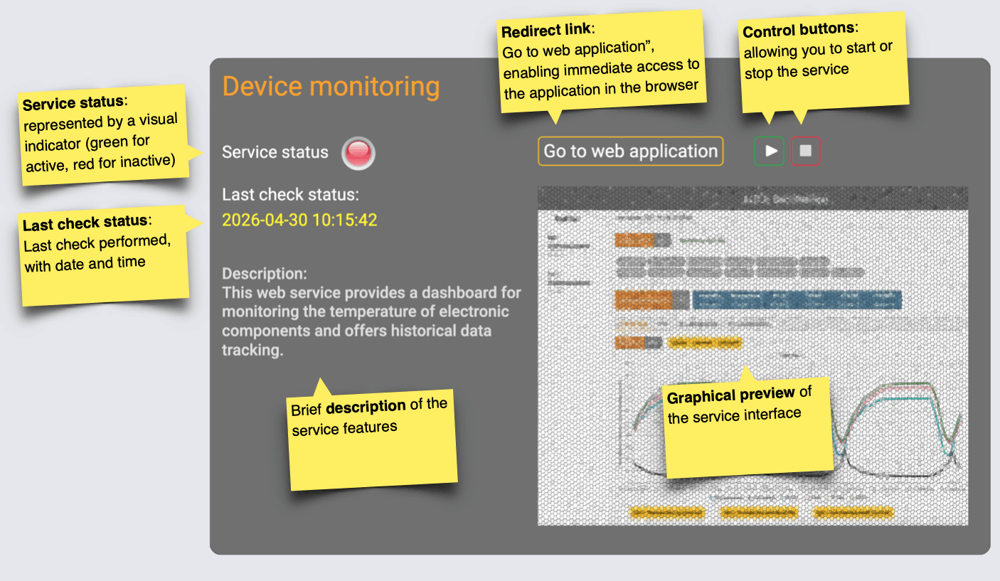
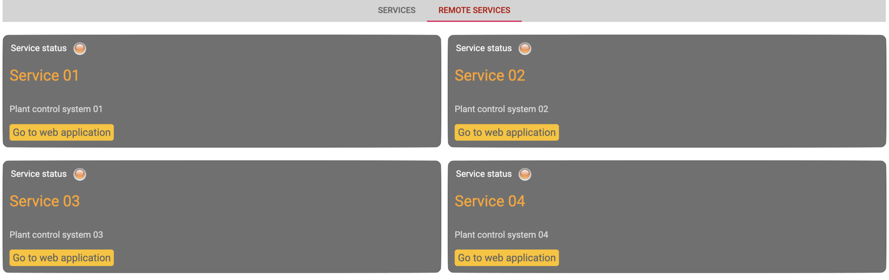

Best AI Website Creator
This web server provides a panel-based interface designed to monitor and control multiple applications. The interface is built to provide an immediate overview of the operational status of various systems and to enable fast with centralized control. At the top, there is a navigation bar that distinguishes between different categories of services. Through a configuration file, it is very easy to integrate and control new systems that you want to manage from the interface.

The image below shows the detail of a single service panel within a web dashboard. The panel, titled “Device monitoring,” clearly and neatly presents all the main information: the service status, highlighted by a visual indicator (red or green), the last check performed with date and time, and a brief description of the features offered. It also includes control buttons to start or stop the service, as well as a direct link that allows quick access to the application in the browser. The panel is completed by a graphical preview of the service interface, providing an immediate visual feedback of the monitored system.

This section displays the available remote services managed by the interface. Each card represents a service with a direct link to the dedicated web application.

Best AI Website Creator